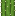
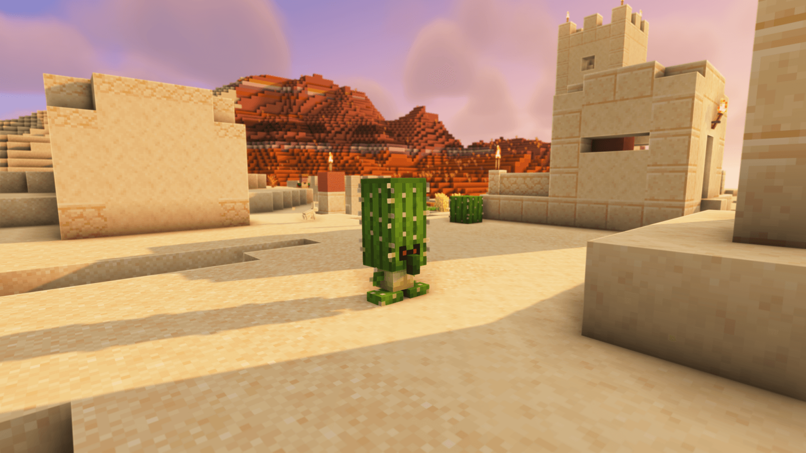

Cactus Golems are village defenders. They wander around their village, chase down hostile mobs and melee them with a slow but reliable swing. They ignore Creepers.
While the golem still has its spines, standing next to it or bumping into it hurts
for 1  , and anything that attacks it takes 3 thorns damage back. Shear the
golem and both of those effects turn off until its spines grow back.
, and anything that attacks it takes 3 thorns damage back. Shear the
golem and both of those effects turn off until its spines grow back.
Cactus Golems appear in two ways:
When a village or any structure attempts to spawn an Iron Golem inside the Desert biome, More Golems replaces it with a Cactus Golem. This means desert villages defend themselves with cactus guardians instead of the usual iron ones.
Stack a Carved Pumpkin on top of a Cactus block anywhere in the world to summon a Cactus Golem. The pumpkin and cactus are consumed and the golem spawns with a burst of happy villager particles.


Carved Pumpkin and consumes one cactus, up
to full health.
Spines regrow after roughly 5 minutes (6000 ticks) of standing in a normal biome, or about half that time in a hot biome such as the desert.
On death the golem always drops one Cactus block and 1 to 2 Cactus Spines.
